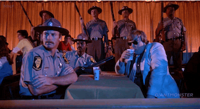

Like many of the cocktails on this list, the Orange Whip enjoyed a resurgence in popularity hot off of its big-screen cameo. In the 1980s musical-comedy “The Blues Brothers,” Jake Candy's character orders three of the rum-and-vodka-based, sweet, frothy cocktails, declaring: “Who wants an Orange Whip? Orange Whip? Orange Whip? Three Orange Whips!”